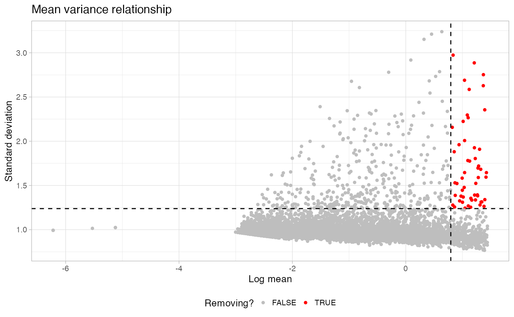
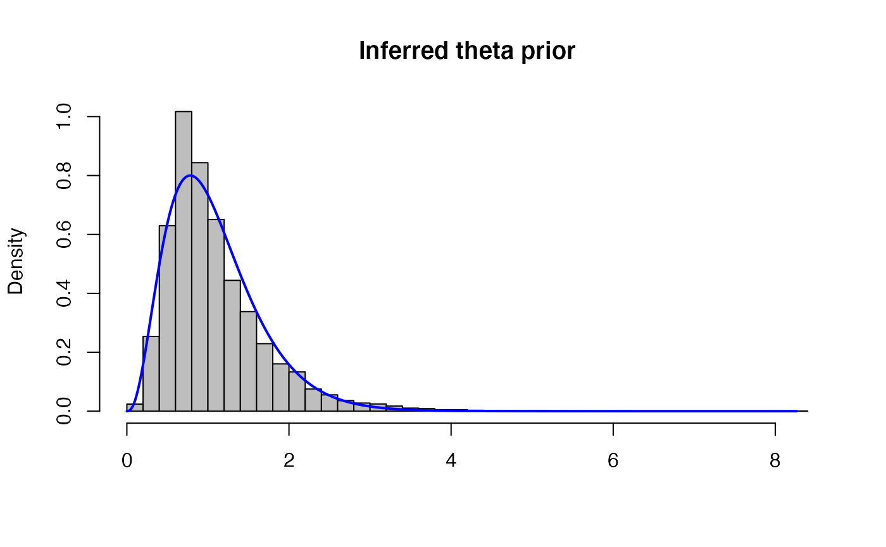
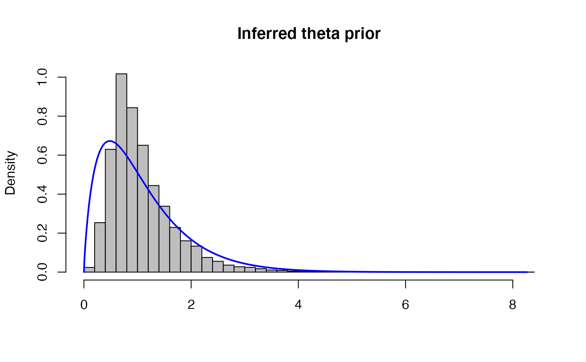
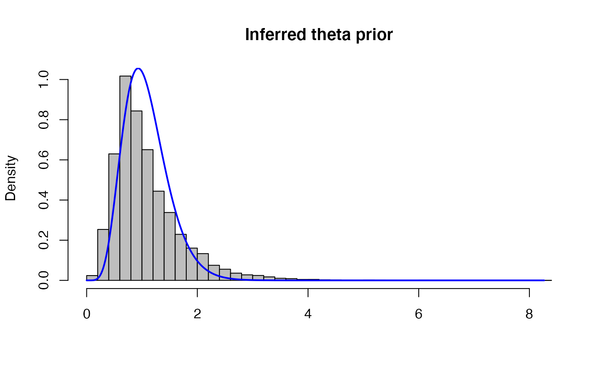

As the joint calling of CN alteration, data normalization and clustering is extremely challenging and characterized by different degree of freedom a filtering step is essential to ensure we are not inflating our false positive count. First of all a filter on highly variable and highly expressed genes can be extremely useful as it tends to remove cell specific markers and those genes that can create significant deviations in the total counts over segment.
## Warning: package 'Seurat' was built under R version 4.1.1## Attaching SeuratObject
library(Rcongas)## Registered S3 method overwritten by 'cli':
## method from
## print.boxx spatstat.geom## Warning: replacing previous import 'cli::num_ansi_colors' by
## 'crayon::num_ansi_colors' when loading 'BMix'## Warning: replacing previous import 'crayon::%+%' by 'ggplot2::%+%' when loading
## 'BMix'## ✓ Loading BMix, 'Binomial and Beta-Binomial univariate mixtures'. Support : <https://caravagnalab.github.io/BMix/>## Warning: package 'ggplot2' was built under R version 4.1.1## Warning: package 'tibble' was built under R version 4.1.1## Warning: package 'tidyr' was built under R version 4.1.1## Warning: package 'readr' was built under R version 4.1.1## Warning: package 'stringr' was built under R version 4.1.1## Warning: package 'forcats' was built under R version 4.1.1## Warning: package 'crayon' was built under R version 4.1.1## ✓ Loading CNAqc, 'Copy Number Alteration quality check'. Support : <https://caravagn.github.io/CNAqc/>## ✓ Loading Rcongas, 'Copy-Number genotyping from single cells'. Support : <https://militeee.github.io/Rcongas/>
library(dplyr)
x <- Rcongas::congas_example
counts <- get_input_raw_data(x, as_matrix = TRUE)
counts_stab <- FindVariableFeatures(counts %>% t)
rownames(counts_stab) <- colnames(counts) %>% make.names(unique = T)
# we just need a dataframe with genes as rownames and the mean and the variance respectively on
# the first and second column
to_remove <- filter_genes(counts_stab[,c(1,4)], plot = T)
# Now our count matrix is ready for the CONGAS analysis
counts <- counts[, -which(colnames(counts) %in% to_remove)]Another difficult task is to choice of the right prior for the library size factors as it affects a lot the final quality of the inference. If you are not sure or to get a decent starting point Rcongas provides a function to fit an hypothetical library size distribution under tha monoclonal assumption, that can be a good starting point.
x <- Rcongas::congas_example
coeff <- approx_theta_prior_params(x, plot = TRUE)
# The function provides a multiplicative factor for the shape and the rate,
# this gives us a sort of control over the variance.
# Remember that values less than one increase the variance, while values
# values larger than one decrese the variance
coeff_large <- approx_theta_prior_params(x, plot = TRUE, mult_factor = 1/2)
coeff_small <- approx_theta_prior_params(x, plot = TRUE, mult_factor = 2)